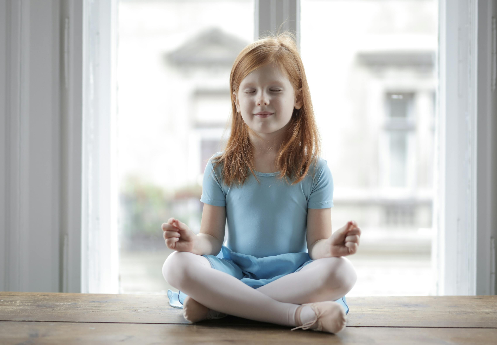

Контрольные работы и даже небольшие самостоятельные — источник напряжения для многих школьников. Но тревога не помогает, а только мешает. Как превратить страх в спокойную уверенность? Делимся проверенными стратегиями.
1. Готовимся заранее, без зубрёжки
Лучший способ снизить стресс — системная подготовка. Разбейте материал на небольшие блоки и повторяйте по 15–20 минут ежедневно за несколько дней до работы. Используйте мои конспекты и тренажёры в разделе «Ученикам» — они помогут понять, что вы уже умеете, а над чем ещё стоит поработать.
2. Создайте ритуал спокойствия
Утром перед контрольной не стоит повторять всё подряд. Лучше сделать лёгкую зарядку, съесть привычный завтрак и послушать спокойную музыку. Не начинайте день с фраз «Как ты выучил?», «Всё ли ты помнишь?». Вместо этого скажите: «Ты хорошо подготовился, я верю в тебя».
3. Техники дыхания и «якоря»
Если тревога накрывает прямо перед работой, помогут простые упражнения:
- Квадратное дыхание: вдох (4 счета) — задержка (4) — выдох (4) — задержка (4). Повторить 3–4 раза.
- «Заземление»: назовите 3 предмета, которые видите, 2 звука, которые слышите, 1 ощущение (например, ступни на полу). Это возвращает в «здесь и сейчас».
- Якорь: положите руку на сердце и скажите про себя «я спокоен, я готов».

4. Что делать родителям
Ваше спокойствие — главный ресурс. Дети считывают ваши эмоции. Не спрашивайте «Как прошло?» сразу после контрольной. Дайте ребёнку выдохнуть, отвлечься. Если работа не удалась, обсудите это позже, не обесценивая старания.
- Не сравнивайте с другими детьми.
- Отмечайте даже маленькие успехи: «Сегодня ты написал разборчивее», «Ты не растерялся и использовал формулу».
- Предложите вместе разобрать ошибки, но только когда ребёнок будет готов.
5. Если тревога становится хронической
Если ребёнок боится даже небольших проверочных, плачет, жалуется на головную боль или боли в животе перед работами — возможно, пора обратиться к школьному психологу. Это не стыдно. Ранняя поддержка помогает сформировать здоровое отношение к оценкам и успеху.
Контрольная работа — это не экзамен на выживание, а возможность показать, что ты знаешь и чему научился. Спокойствие, режим и поддержка близких — лучшие помощники.